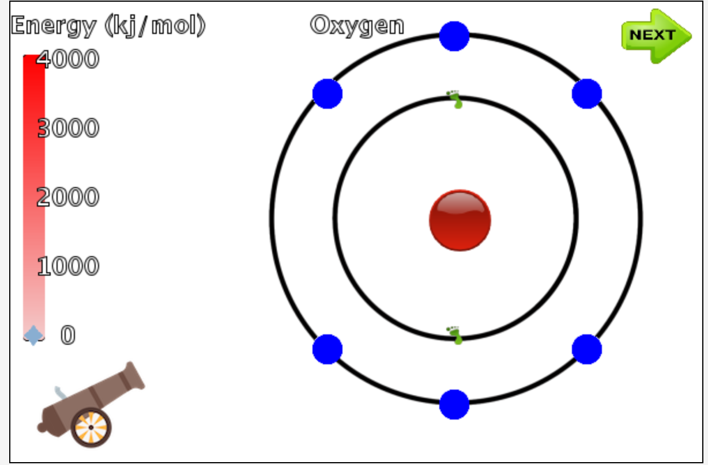
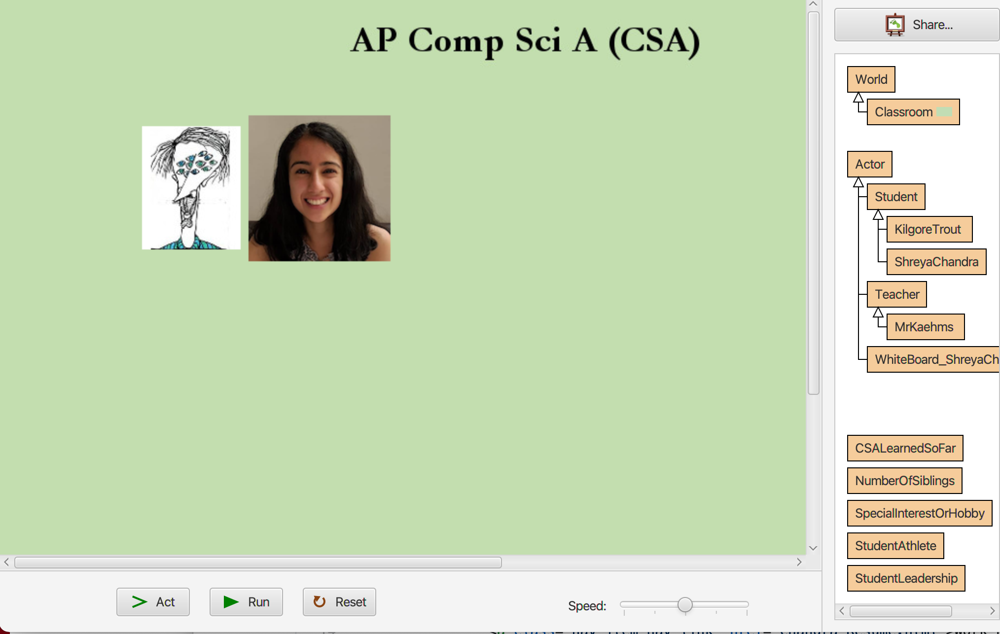
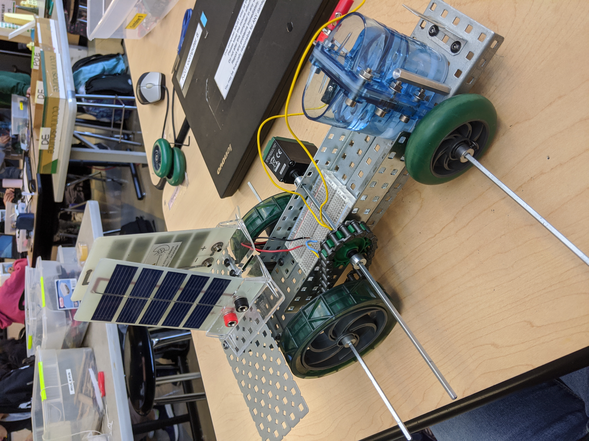

Entrepreneurship Project: Delivery Doormat ~ Intro to Engineering Design
May 2022
Objective: Develop a product that improves upon an already existing idea or is an entirely new invention to solve a current problem.
As part of our Entrepreneurship Project, my team was tasked with creating a product and developing a business plan that we would present in front of our class and compete with other teams to see who would move onto the next round of the competition. Our product required detailed documentation throughout, which we supplemented with a video and survey to conduct research for our product evaluation. My group was particularly interested in preventingpackage theft, and thus 3D modeled an improved version of the typical doormat which would set an alarm as soon as the package was placed on the mat. If a porch pirate attempted to run off with the package, the police would be notified immediately. Otherwise, the home owner could simply return home, turn the alarm off, and collect their package. In order to ensure security, our doormat has a barcode scanner that scans the barcode already on the package's label to activate the alarm. Moreover, there is also a weight sensor and suction cups (which we included in our second iteration) to also activate the alarm and pull the package down to the mat to prevent the thief from being able to steal the mat in the first place. My primary contributions to this project were the 3D modeling of both doormat iterations, as well as documentation and slideshow presentation development.

Mousetrap Powered Toy ~ Intro to Engineering Design
March 2022
Objective: Construct a working model of an animated toy that is powered by a mousetrap and common supplies/recycled materials.
For this particular project, my group and I were tasked with developing a mousetrap powered toy made from everyday objects, with the toy's motion being able to last as long as possible, as well as be an attractive and robust design. Several constraits for this project included a maximum budget of $5.00 (for purchased materials), and unlimited recyclable materials. A pull back and release action was necessary to operate the model, with a maximum time to re-set and re-release being 2 minutes. The movement also needed to last for at least 8 seconds from release. Prohibited materials included hot glue, tape, and fasteners, and prohibited tools included saws of any type and drills of any type. Out team decided to create a "Jurassic Carousel," which was powered by the mousetrap and subsequent pulley system. The carriage was characterized as jurassic due to our inclusion of small, colorful toys dinosaur toys on our miniature carousel, which we were able to purchase with the less than $5.00 budget. My personal contributions to the project included constructing the carousel itself, as well as the documentation with developing an educational game using Greenfoot to
AI ChatBot ~ AP Computer Science Applications
March 2021
Objective: Develop an AI chatbot with a theme or a specific domain of understanding.
To conclude our Artificial Intelligence unit, my partner and I were tasked with creating a chatbot using the concepts we had learned in class, as well as potential other external libraries, in order to develop a bot that can maintain a conversation. We were provided with instructions to develop this product requiring detailed documentation describing how our chatbot worked and the thought process that went into its creation. My partner and I decided upon a bot that could continuously improve upon itself, such as an assistance chatbot that is often used for customer service. Using the HashMap library, we created a simple bot that possessed a few pre-programmed responses to key words or statements that it could detect in the user's responses, as well as included a conditional statement that allowed the user to explain to the bot the type of response desired in the future if it encountered a similar statement to the one that was currently not recognizeable. Throughout this project, I primarily worked on developing potential responses, detecting key words in a user's response, and "remembering" the user's suggested response. This project also occured virtually, and I learned how to share and collaborate on code in a virtual setting.
Research Topics in CS ~ AP Computer Science Applications
February 2021
Objective: Research an open source project, library, framework, or unique language or toolkit of your choice. Create a working demo from your toolset, and a 7-10 minute presentation based on your tool or toolset. Provide your well documented demo code via GitHub.
As part of our CS Research unit, my team was tasked with selecting a CS-related concept we found to be intriguing and developing a project that would showcase our chosen concept to our class. We were provided with instructions to develop this product requiring detailed documentation describing how our prototype worked and an in-depth explanation of what we had decided to research. My group was particularly interested in data analysis, so we chose to learn R and create a wine recommendation system based upon values provided by UC Irvine. As part of this recommendation system, we took a smaller sample of data from our larger data set in order to allow the user to compare and contrast specific components of their chosen wines, displayed various data plots in order to showcase this data as a visualization, and developed a k-NN model in order to truly recommend a wine to our user. Throughout this project, I primarily worked on developing cleaning CSV files, creating code to take a smaller sample size of data, and showcasing our data in plots. This project also occured virtually, and I learned how to quickly pick up a new language and create a project using what I had learned.

Educational Game - Exciting Electrons! ~ AP Computer Science Applications
November 2020 - December 2020
Objective: Create an game using Greenfoot that teaches the user an educational topic.
For our end of unit project, my group and I were tasked with developing an educational game using Greenfoot to enhance the player's understanding of a concept. We were provided with instructions to develop this product requiring detailed documentation and a milestone chart as to how our game worked, screenshots of and analyses of our individual contributions towards the project. My team chose to create a game that would be best used to aid in the learning of the AP Chemistry concept of electron affinity. Our game consisted of a cannon, which would eject photons at the Bohr model in order to remove the outer ring's electrons. The object of the game was to remove the electrons at the correct energy level, as we had a fluctuating energy bar. Throughout this project, I primarily worked on developing the cannon and energy bar. This project also occured virtually, and I learned how to successfully develop an elaborate coding project in a short time period.

Greenfoot Seating Chart ~ AP Computer Science Applications
July 2020 - August 2020
Objective: Develop an individual "introduction" on Greenfoot in order to develop a virtual class seating chart.
For my class' Greenfoot Seating Chart Project, I worked with a team of of two other students in order to develop a smaller version of the seating chart, which my class later pushed to GitHub and merged to create our final product. We were provided with instructions to ensure we would each meet the required specifications for the project. We each created our own "avatar" on Greenfoot, which consisted of our individual picture, a small animation that would run once our image was clicked, and a soundbite where we introduced ourselves. This project helped to enhance my basic understanding of Java (which Greenfoot utilizes). As this project took place during the COVID-19 shelter in place order, my team and I had to meet virtually through Zoom to create this project and merge our individual avatars together. We learned how to adapt to this new method of collaboration, and found that we were able to cooperate and assist one another effectively even though we were unable to meet in person.

Solar Hydrogen Vehicle ~ Honors Principles of Engineering
November 2019 - December 2019
Objective: Design, construct, test, and refine a prototype that uses a solar cell and hydrogen fuel cell interchangeably as a power source in four distinct configurations.
For our Solar Hydrogen Vehicle Project, my team and I constructed a vehicle using VEX parts that could be powered by both solar and hydrogen fuel cells using series and parallel circuits. We were provided with criteria to develop this product requiring detailed documentation as to how our prototype worked, screenshots of and annotations for our vehicle wired in series and parallel for both fuel cell configurations, efficiency measurements and calculations, and a power source evaluation. Our most efficient vehicle test run was powered by two solar fuel cells in a series circuit configuration, as it had the highest efficiency rate of 65.84%. Conversely, our least efficient test run proved to be the usage of one hydrogen fuel cell in a parallel circuit configuration, only generating an efficiency rate of 9.77%. The main problem my team encountered was deducing how best to make our vehicle run using hydrogen fuel cells, as they would quickly run out of power, which we resolved through repeated trial and error. I was project manager once again, meaning I ensured my team was systematically accomplishing the necessary requirements. My main tasks in the assignment were constructing barriers to secure the fuel cells to the vehicle, adjusting the chain and sprocket attached to the back wheels' axle to fit within the measurements allocated by the project's constraints, and completing the image annotations on our documentation. This project scored well because it met the necessary criteria in the rubric. Throughout this project, I learned how to utilize series and parallel circuitry to create power in real life situations, the pros and cons behind various alternative energy methods, and how to effectively delegate responsibilities within a team such that all members contributed equal effort to the project.

The Incredible Lifter ~ Honors Principles of Engineering
October 2019 - November 2019
Objective: Design and build a small-scale prototype of a mechanical winch system.
For our Incredible Lifter Mechanical Winch Project, in which a combination of VEX and Fisher Tech parts were used, my team and I designed and produced a prototype powered by a FisherTech motor that would lift a 1.152N weight 30cm off of the ground. We also had to produce a working NetLogo simulation of our prototype. We were provided with criteria to develop this product requiring detailed documentation as to how our prototype worked, screenshots of our NetLogo code, efficiency measurements and calculations, and a functionality evaluation. Our final product uses a power supply and switch to activate the motor, which powers a Fisher Tech gear. On the same axle as the Fisher Tech gear is a VEX gear, powering a simple gear train by connecting to a larger VEX gear, which shares the same axle as the "spool" of thread used to lift the weight. The main problem my team encountered was determining how to successfully power the motor to turn our two gear trains, which we resolved through trial and error, spending additional time after school for many days in order to verify that our system worked properly. I was project manager, meaning I ensured my team was systematically accomplishing the necessary requirements. My main tasks in the assignment were creating the NetLogo simulation, as well as working hands-on with my team to construct our prototype. This project scored well because it met the necessary criteria in the rubric. Throughout this project, I learned how to create user modifiable GUIs using the NetLogo programming language, how to hold a team accountable and keep them motivated, and gained familiarity with both Fisher Tech and VEX parts.
Market Artists ~ Computer Science Principles
March 2019 - April 2019
Objective: Develop a product for one of four potential clients, either a cause, family, product, or developer mode, in order to create memorable images that are manipulated through masking, logos, borders, and geometric shapes, along with offering a range of options as a parameter.
For our Market Artists Image Manipulation Project, developed using Python, my partner and I selected to meet the requirements of the product client, who wanted to be able to apply their brand image as a frame, overlay, or silhoutte to a large number of image, as well seeing abstract art and geometric shapes offered throughout. We were provided with criteria to partner program a product requiring a detailed log as to how our work was evenly distributed. Our final product allows the client to include a pre-designed logo, drop shadow effect, and multiple borders. The client may alter the logo's color, opacity, size, and location. The background color can be changed, or an image can be used as the background of another for the drop shadow effect. The various borders offered can also change in both color and thickness. We encountered a multitude of problems during the development phase of our project, primarily in how we would allow the user to modify each mask to their desire, which my partner and I worked together to resolve through continuous trials and modification. My main tasks in the assignment were creating the logo, horizontal stripes border, triangle corners border, triangle sides border, and triangles and rectangles border, and I assisted my partner when needed in allowing the user to apply multiple masks at once. This project received full credit because it met the necessary criteria in the rubric and offered more complexity than desired. Throughout this project, I learned how to apply a mulitude of features to images using Python, how to create higher level code that includes efficient algorithms and abstractions, and how to compromise and work effectively with a partner when issues arose in our code.

Color My Canvas ~ Computer Science Principles
September 2018 - October 2018
Objective: Given a template, create an app with a partner that incorporates your own design elements using MIT App Inventor.
For our Color My Canvas Project, developed using MIT App Inventor, my partner and I selected and redesigned one of the provided apps known as "Colored Dots," a limited drawing app that would only allow the user to paint in dots, and was confusing to utilize due to its color options that could not be easily be switched back and forth. We were provided with criteria to partner program an app requiring a detailed log as to how our work was evenly distributed. To meet our necessary requirements, my partner and I brainstormed how to make the user experience more fulfilling and be a versatile tool, causing us to rebuild the framework of the app. The newly created app now has a bar with prestored colors and a canvas that draws lines in all directions. The size of the paintbrush was made to be adjustable and we included two different eraser settings, one which erased the entire canvas and another where only small sections of the canvas would be erased by dragging a finger. A separate button was added to provide instuctions to the user for an easy overall app experience. The main challenges encountered while developing this app were making the eraser remove only specific sections of the drawing and creating a scrollable bar with preset colors for the user. I personally resolved both of these challenges head-on as team leader and primary coder, while my partner focused more on the brush size and main screen, as well as the documentation. This project scored remarkably high because it met the criteria in the rubric. Throughout this project, I learned how to use advanced features on MIT App Inventor and how to troubleshoot effectively with a partner in order to make one aspect or button of the app carry out various functions.